Hierarchical MPC: Solar Irrigation
A dual-loop control architecture for off-grid solar irrigation. Features an Outer Loop MPC fused with Penman-Monteith logic and an Inner Loop Adaptive PI controller.
A collection of my independent projects and experiments.
Robotics simulations, control architectures, path planning, and system modeling.
A dual-loop control architecture for off-grid solar irrigation. Features an Outer Loop MPC fused with Penman-Monteith logic and an Inner Loop Adaptive PI controller.
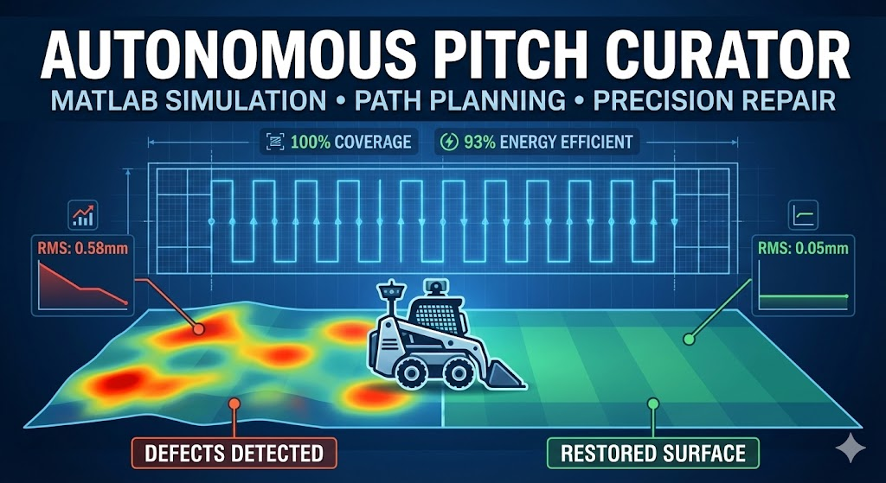
High-fidelity MATLAB simulation of a rover for cricket pitch maintenance. Features stochastic defect detection and coverage-optimized path planning.
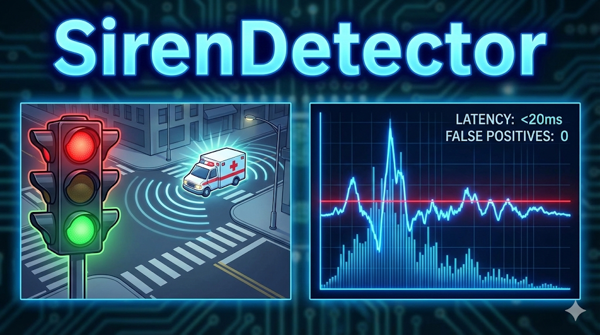
Deterministic DSP system for traffic signal preemption. Detects sirens from 1000ft with <20ms latency using STFT spectral analysis, operating entirely offline without AI.
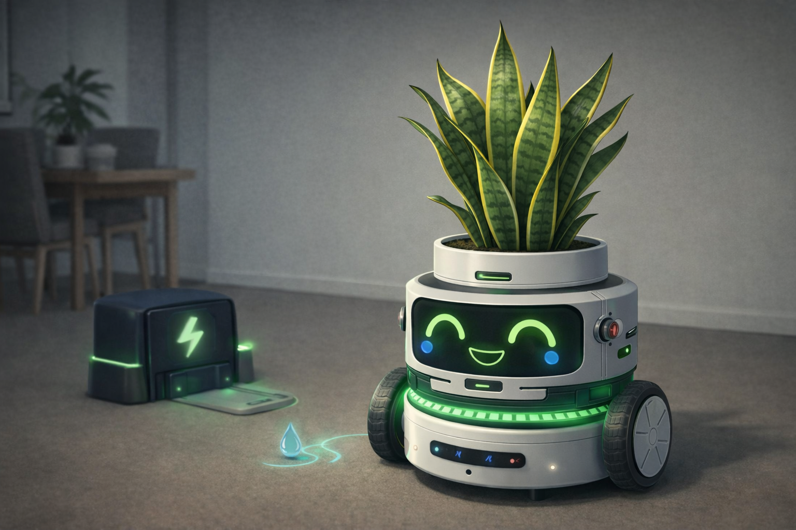
Robotic plant agent simulation using Affective Computing. Features metabolic modeling, self-charging logic, and priority-based survival instincts.
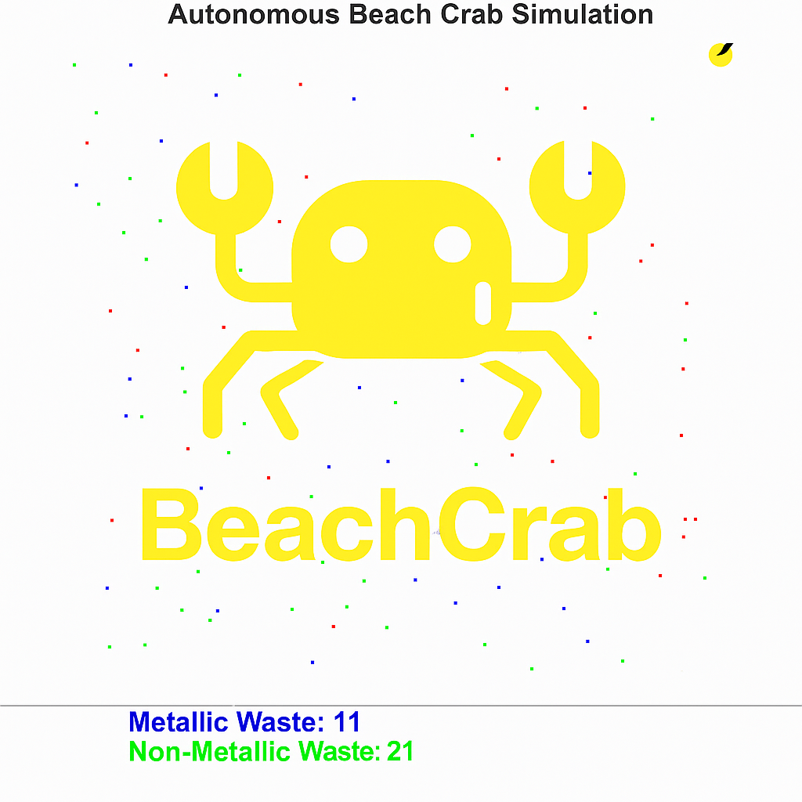
Simulation of an autonomous beach-cleaning robot. Features a Klann Linkage mechanism for locomotion and 4-bar linkage scoop.
Security automation, anomaly detection, phishing defense, and applied AI.
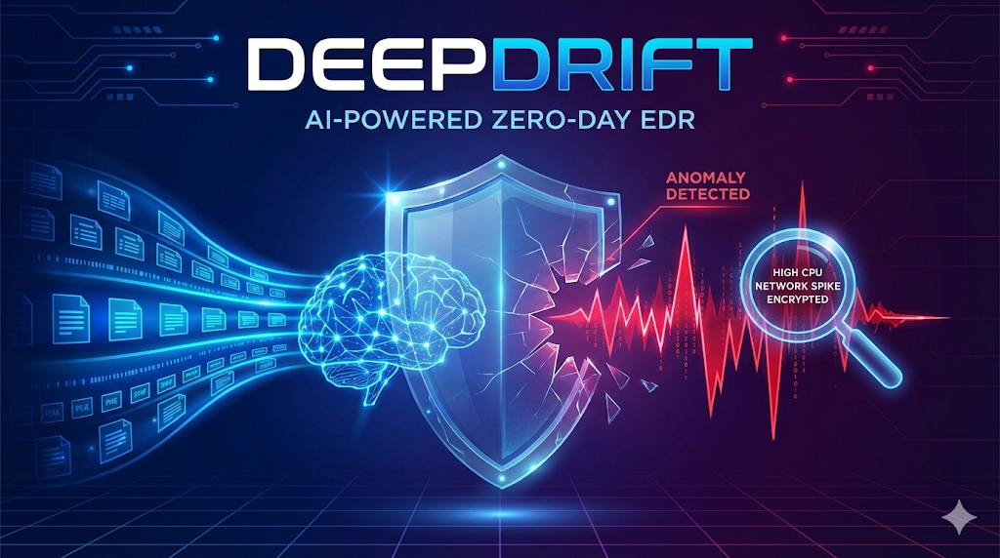
A Python-based SOAR prototype for ingesting identity-related logs and automating responses to password spraying, MFA fatigue, and impossible-travel scenarios using rule-based and geolocation-aware logic.

A Python-based SOAR prototype for ingesting identity-related logs and automating responses to password spraying, MFA fatigue, and impossible-travel scenarios using rule-based and geolocation-aware logic.
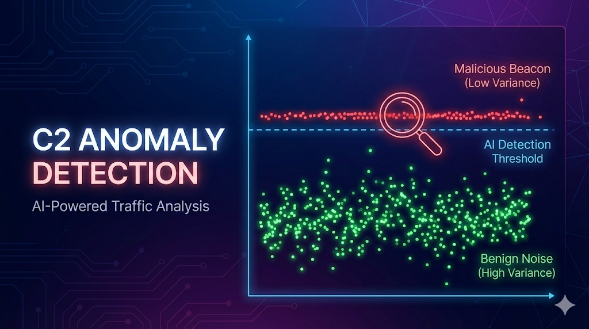
A Python-based network simulation framework that generates obfuscated C2 beaconing traffic and utilizes Machine Learning (Isolation Forests) to detect malicious channels based on statistical variance analysis.
Demonstrated Applications, Static Sites, and Growth Tools.
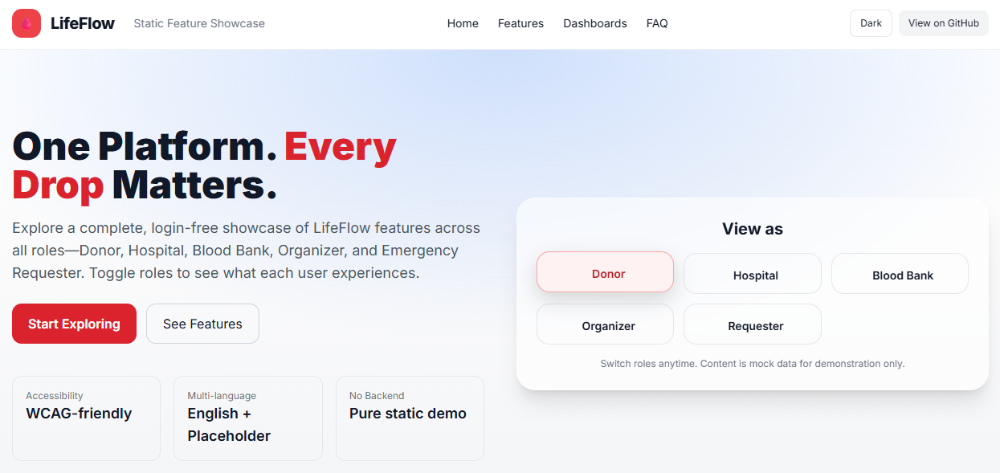
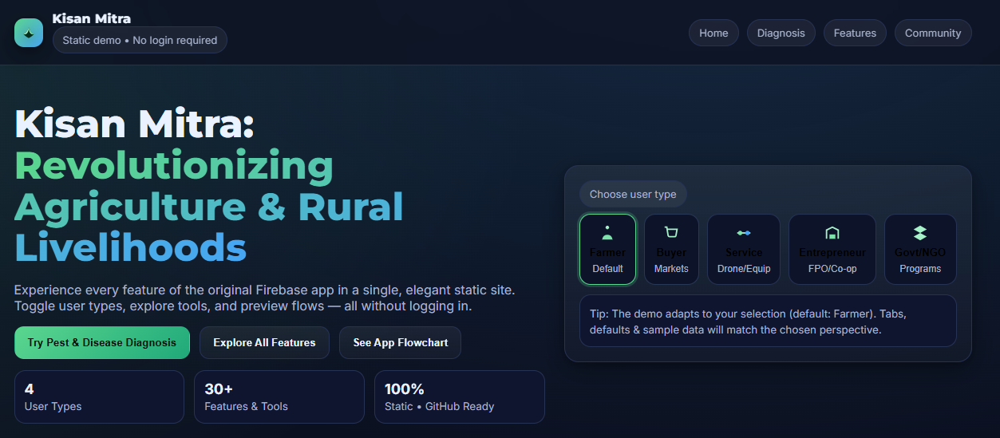
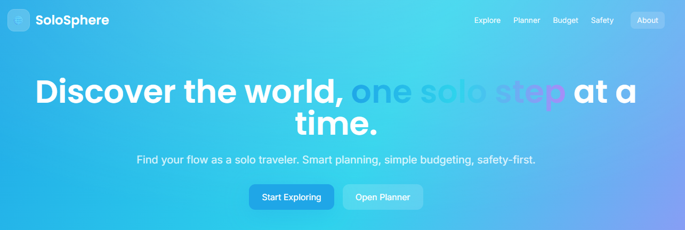
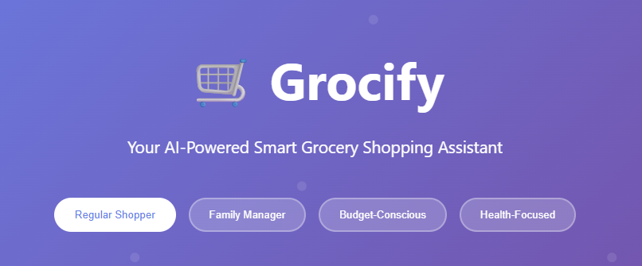
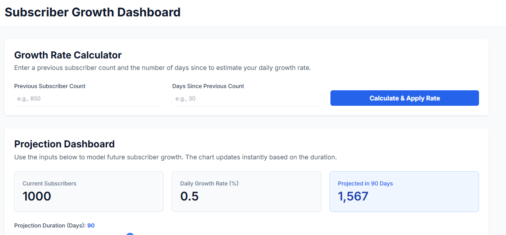
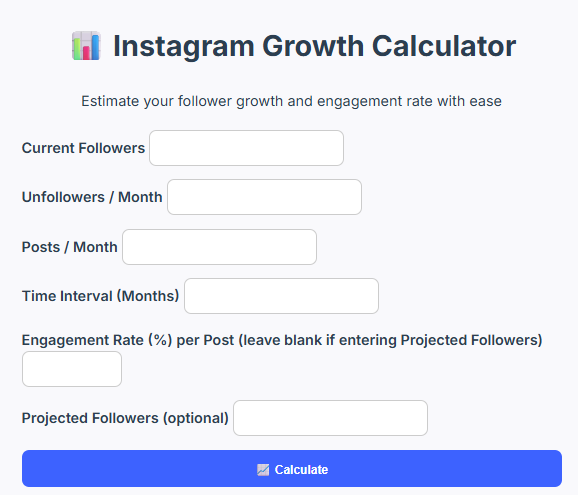